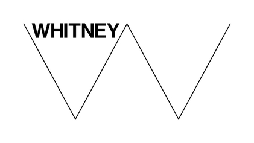

홈 > 브랜드 매거진 > MIT Museum
MIT Museum
MIT 뮤지엄은 매사추세츠공과대학교가 운영하는 과학·기술·디자인 박물관으로, 2022년 10월 케임브리지 켄들 스퀘어의 새 건물로 이전 개관하며 디자인 스튜디오 펜타그램(Pentagram)이 제작한 새 비주얼 아이덴티티를 도입했다. 디자인 아카이브 관점에서 이 작업이 주목받는 이유는, 박물관이라는 기관의 이름과 성격을 그대로 옮긴 평범한 로고가 아니라 글자 M이 서로 만나 직각을 이루며 무한히 재구성되는 모듈형 시스템으로 설계되었다는 점이다. 로고타입, 사이니지...
산업 분야 미디어·엔터테인먼트 · 공개 등급 편집 검수 · 브랜드 평가 4 ★
MI
MIT Museum
한눈에 보는 브랜드
MIT 뮤지엄은 매사추세츠공과대학교가 운영하는 과학·기술·디자인 박물관으로, 2022년 10월 케임브리지 켄들 스퀘어의 새 건물로 이전 개관하며 디자인 스튜디오 펜타그램(Pentagram)이 제작한 새 비주얼 아이덴티티를 도입했다. 디자인 아카이브 관점에서 이 작업이 주목받는 이유는, 박물관이라는 기관의 이름과 성격을 그대로 옮긴 평범한 로고가 아니라 글자 M이 서로 만나 직각을 이루며 무한히 재구성되는 모듈형 시스템으로 설계되었다는 점이다.
로고타입, 사이니지, 전시 그래픽, 홍보물에 이르는 통합 체계 전체가 하나의 조형 원리에서 파생되어, 박물관이 다루는 연결·창의·발명이라는 주제를 형태 자체로 표현한다. 작업은 펜타그램 뉴욕 사무소의 파트너 마이클 비럿(Michael Bierut)이 이끌었으며, 56,000제곱피트 규모의 새 시설 개관과 전시 그래픽 제작까지 포함하는 대규모 프로젝트로 진행되었다.
브랜드 관점
이 아이덴티티의 핵심 통찰은 로고를 고정된 마크가 아니라 작동하는 규칙으로 다루었다는 데 있다. 로고타입 안에서 두 개의 M이 맞물려 직각을 만들고, 이 직각 모듈은 단어 쌍을 잇거나 옆으로 눕혀 모노그램이 되는 등 상황에 따라 재배열된다.
결과적으로 하나의 박물관이 여러 전시와 매체에서 서로 다른 표정을 갖되 같은 골격을 유지할 수 있다. 또 하나의 통찰은 모기관의 디자인 유산을 단절이 아니라 계승으로 다룬 점이다.
이 작업은 뮤리얼 쿠퍼(Muriel Cooper), 재클린 케이시(Jacqueline Casey), 랠프 코번, 디트마 윙클러 등이 MIT 디자인 서비스국에서 정립한 모더니즘 그래픽 전통과 의도적으로 결을 맞추도록 설계되었다. 펜타그램은 앞서 MIT 미디어랩, MIT 도서관, MIT 테크놀로지 리뷰, 동문회 등 대학 산하 여러 조직의 아이덴티티를 다듬어 왔고, MIT 뮤지엄 작업은 이 일관된 정렬 작업의 연장선에 놓인다.
시작과 성장
MIT 뮤지엄의 기원은 1971년으로 거슬러 올라간다. 그해 워런 시먼스(Warren Seamans)가 총장실과 인문학부의 전시 프로젝트로 출발시킨 소장품 활동이 같은 해 12월 MIT 역사 컬렉션으로 명명되었고, 이것이 박물관의 전신이 되었다.
1980년 정식으로 MIT 뮤지엄으로 개칭되며 MIT 공동체와 사회 전반을 위한 전시·교육 프로그램을 개발하기 시작했다. 소장품은 홀로그래피, 기술 관련 예술, 인공지능, 건축, 로봇공학, 해양사, 그리고 MIT 자체의 역사를 아우른다.
특히 약 1,800점에 이르는 홀로그래피 컬렉션은 세계 최대 규모로, 박물관의 성격을 상징하는 대표 소장품이다. 펜타그램의 아이덴티티 작업은 이 오랜 기관이 켄들 스퀘어의 혁신 지구로 거점을 옮기는 전환점에 맞춰 의뢰되었고, 박물관의 새 출발을 시각적으로 정의하는 역할을 맡았다.
브랜드 아이덴티티
비주얼 아이덴티티의 중심에는 글자 M을 직각으로 맞물리게 한 모듈형 로고타입이 있다. 두 M이 만나 만드는 직각은 단어를 잇는 연결 장치이자 프레이밍 도구로 작동하며, 옆으로 눕혀 이중 M 모노그램으로도 쓸 수 있다.
이 단일 원리가 전체 시스템의 문법이 되어, 사이니지와 길찾기, 새 갤러리의 전시 그래픽, 홍보물까지 일관되게 적용된다. 전시 그래픽에서는 박물관 아이덴티티를 토대로 아홉 개의 개별 그래픽 시스템이 만들어졌고, 전시 주제에 따라 타이포그래피 표현을 달리했다.
인공지능을 다룬 전시에서는 글자꼴 자체가 초점이 되고, 소장품 전시에서는 입체적으로, 유전·문화 전시에서는 파편화된 방식으로 변주되어, 갤러리마다 내용과 전시 설계에 호응하는 고유한 표정을 갖는다. 작업은 마이클 비럿이 파트너로 이끌고 조니 시코프, 존 루만, 애비 마토섹 등이 참여했으며, 전시 그래픽 단계에서는 추가 팀원과 외부 협업자들이 합류했다.
제품과 서비스
펜타그램의 산출물은 로고 한 점에 그치지 않고 박물관 운영 전반을 떠받치는 그래픽 인프라 전체로 확장되었다. 사이니지와 길찾기 시스템은 나선형으로 이어지는 갤러리 동선을 따라 관람객을 안내하도록 설계되었고, 25,000제곱피트가 넘는 갤러리를 위한 전시 그래픽이 제작되었다.
제작 규모는 600건이 넘는 개별 전시 제목과 그래픽 패널, 오브젝트 라벨, 그리고 전시물에 동반되는 30점이 넘는 맞춤 다이어그램과 인포그래픽에 이른다. 대표 전시로는 에센셜 MIT, AI 마인드 더 갭, 진 컬처스, MIT 컬렉츠 등이 있으며, 각 전시는 공통 아이덴티티를 공유하면서도 독자적인 시각 체계를 갖는다.
전시 설계는 스튜디오 조지프가, 디지털 미디어는 블루 캐디트가 맡는 등 외부 스튜디오와의 협업으로 복잡한 과학 개념과 실물 전시를 함께 다루는 통합 환경이 완성되었다.
사람들
현재 상태
새 아이덴티티는 2022년 10월 2일 켄들 스퀘어 314 메인 스트리트의 새 시설 공식 개관과 함께 가동되어 현재 박물관의 모든 접점에서 사용되고 있다. 56,000제곱피트 규모의 새 박물관은 하층 세 개 층에 전시 공간이 자리하며, 박물관 인테리어는 회블러+윤(Höweler + Yoon)이, 전시 디자인은 스튜디오 조지프가 담당했다.
직각으로 맞물리는 M 모듈은 전시가 교체되고 새 프로그램이 더해질 때마다 재구성되는 방식으로 작동하도록 설계되었기 때문에, 고정된 로고가 아니라 계속 변주되는 살아 있는 시스템으로 운용된다. 디자인 아카이브 맥락에서 이 작업은 펜타그램이 진행해 온 MIT 산하 기관 아이덴티티 정렬 작업의 한 사례이자, 모더니즘 전통을 현대적 모듈 시스템으로 재해석한 대학 박물관 브랜딩의 참고 사례로 기록된다.
타임라인
BI/CI 변천사
확인된 BI/CI 이미지가 아직 없습니다.
함께 읽을 브랜드
미디어·엔터테인먼트 · 편집 검수Philbrook Museum of Art 미디어·엔터테인먼트 · 편집 검수Munson
미디어·엔터테인먼트 · 편집 검수Munson
Philbrook Museum of Art는 2012년에 기록된 Designed by Pentagram 계열의 브랜드 아이덴티티 사례입니다. Pentagram, Mi...
미디어·엔터테인먼트 · 편집 검수MunsonMunson는 2023년에 기록된 Museums, Galleries & Libraries 계열의 브랜드 아이덴티티 사례입니다. Order가 아이덴티티 작업의 디자이너...
Ex
Expo '75
미디어·엔터테인먼트 · 편집 검수Expo '75Expo '75는 1972년에 기록된 World Expos 계열의 브랜드 아이덴티티 사례입니다. Yusaku Kamekura, Kazumasa Nagai가 아이덴티티...

미디어·엔터테인먼트 · 편집 검수Whitney Museum of American ArtWhitney Museum of American Art는 2013년에 기록된 Museums, Galleries & Libraries 계열의 브랜드 아이덴티티 사례입니...
De
Den Kongelige Samling
미디어·엔터테인먼트 · 편집 검수Den Kongelige SamlingDen Kongelige Samling는 2025년에 기록된 Museums, Galleries & Libraries 계열의 브랜드 아이덴티티 사례입니다. Kontra...
Ex
Expo '90
미디어·엔터테인먼트 · 편집 검수Expo '90Expo '90는 1987년에 기록된 World Expos 계열의 브랜드 아이덴티티 사례입니다. Mitsuo Katsui가 아이덴티티 작업의 디자이너로 기록되어 있습...
Po
Postmuseum
미디어·엔터테인먼트 · 편집 검수PostmuseumPostmuseum는 2024년에 기록된 Museums, Galleries & Libraries 계열의 브랜드 아이덴티티 사례입니다. Bold가 아이덴티티 작업의 디...
Ro
Royal Ontario Museum (ROM)
미디어·엔터테인먼트 · 편집 검수Royal Ontario Museum (ROM)Royal Ontario Museum (ROM)는 2024년에 기록된 Museums, Galleries & Libraries 계열의 브랜드 아이덴티티 사례입니다. L...